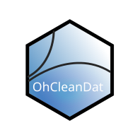

Create Other Choice Log
create_other_choice_log.RdCreates custom validation log for 'other: explain' free text responses that may contain valid multi-choice options.
Arguments
- response_data
data.frame ODK questionnaire response data
- form_schema
data.frame ODK flattened form schema data
- url
The ODK submission URL excluding the uuid identifier
- lookup
a tibble formatted as a lookup to match questions with their free text responses. The format must match the output of
othertext_lookup(). This function can be passed to this function argument as a convenient handler for this value.- existing_log
data.frame Existing log for this data set. Should be the same log that was used to create the semi-clean data.
Details
create_other_choice_log creates log entries for a special case of free text fields. These are the entries that coincide with select_multiple questions that have an other option which leads to a free text entry (e.g. what animals do you own? cattle, goat, sheep, other –> other explain: "free text response here").
Because these log entries are based on data type, and not data value, we need to provide additional inputs to keep them from being entered twice into the log. By providing the existing_log, we can look for validated entries in the existing log and only add items that have been validated.
Unlike other logs, responses are only ever added one time. So even if the free text associated with the multiple select question changes, the multiple select options will not be added again.
This function needs to link a survey question with its corresponding free text response. Users can use the
othertext_lookup() function to handle this, or provide their own tibble in the same format. See below:
tibble::tribble(
~name, ~other_name,
question_1, question_1_other
)
Examples
if (FALSE) { # \dontrun{
# Using othertext_lookup helper
test_a <- other_choice_log(response_data = animal_owner_semiclean,
form_schema = animal_owner_schema,
url = "https://odk.xyz.io/#/projects/5/forms/project/submissions",
lookup = ohcleandat::othertext_lookup(questionnaire = "animal_owner"),
existing_log
)
# using custom lookup table
mylookup <- tibble::tribble(
~name, ~other_name,
"f2_species_own", "f2a_species_own_oexp"
)
test_b <- other_choice_log(response_data = animal_owner_semiclean,
form_schema = animal_owner_schema,
url = "https://odk.xyz.io/#/projects/5/forms/project/submissions",
lookup = mylookup,
existing_log
)
# using odk excel schema
xlsx_lookup <- othertext_lookup_from_odk_excel(file_path = "animal_owner_schema.xlsx")
test_c <- other_choice_log(response_data = animal_owner_semiclean,
form_schema = animal_owner_schema,
url = "https://odk.xyz.io/#/projects/5/forms/project/submissions",
lookup = xlsx_lookup
)
} # }